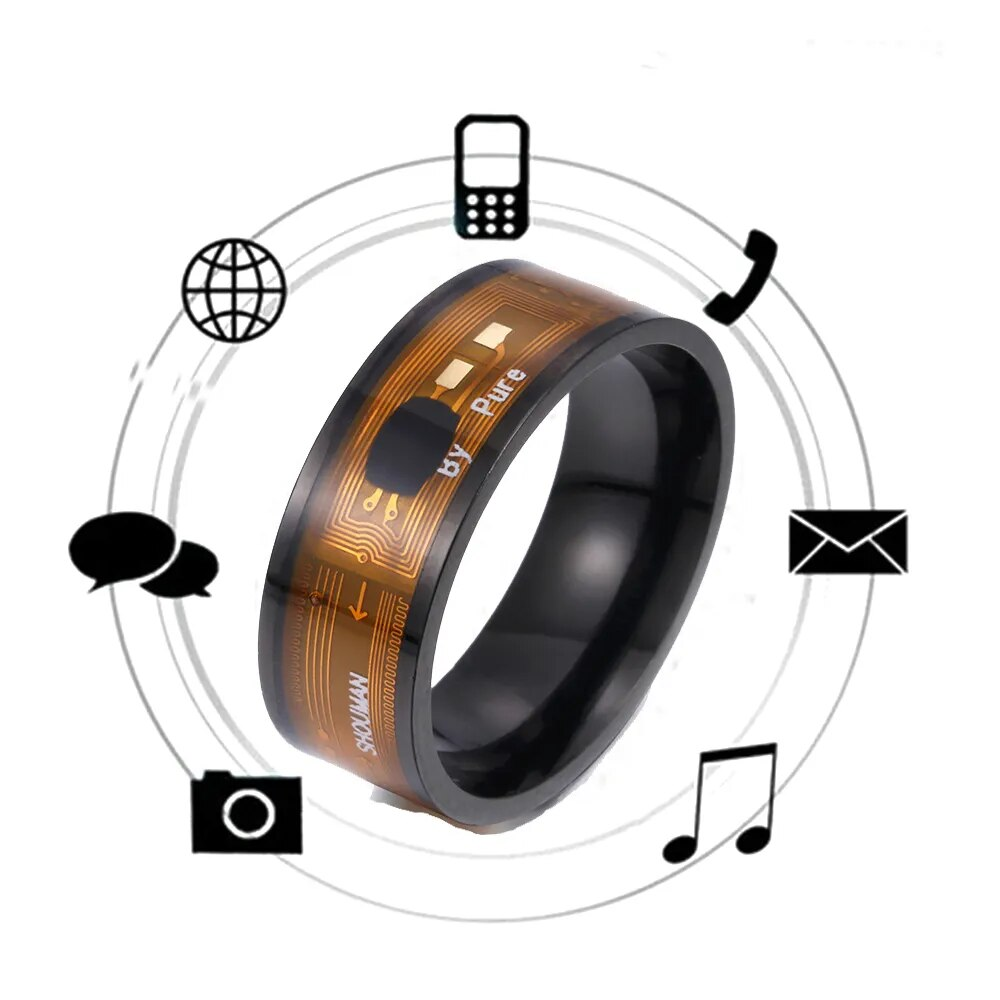
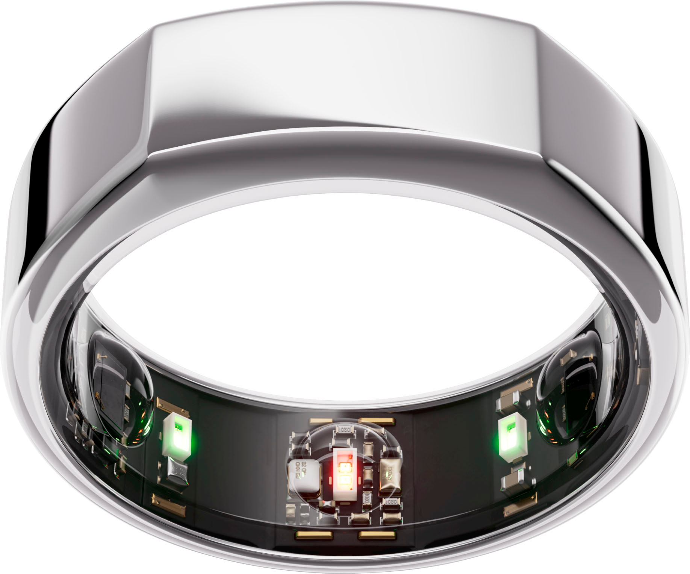
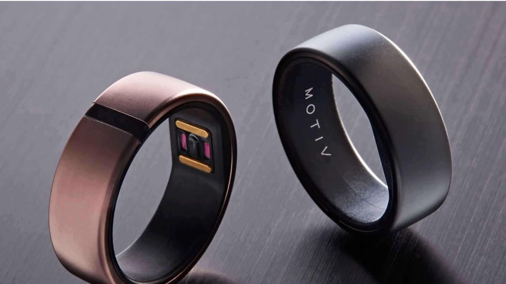
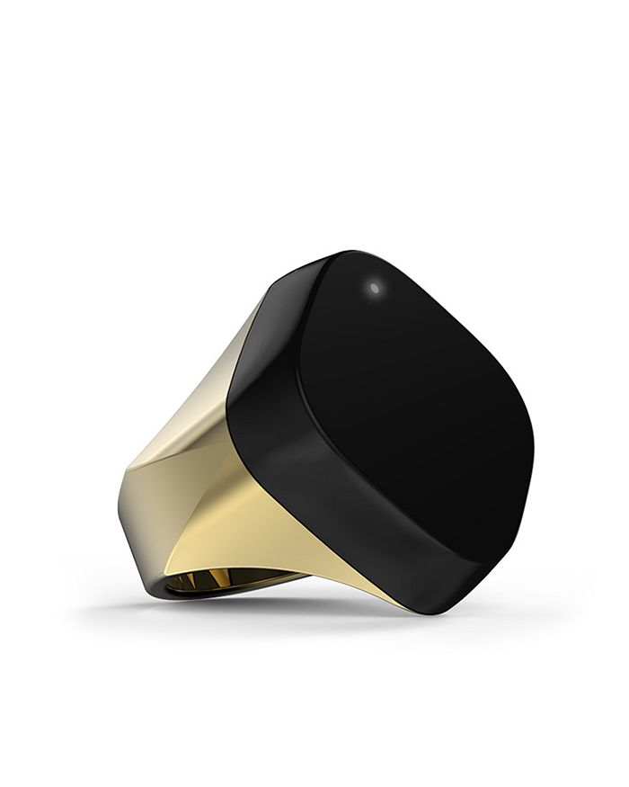
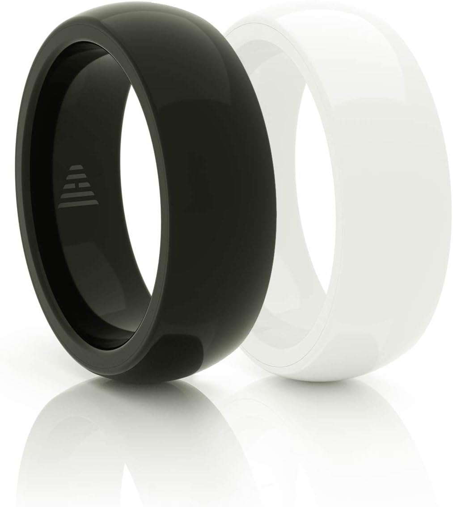
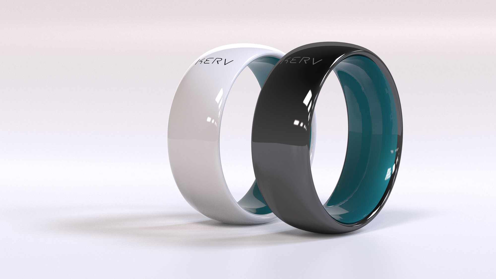
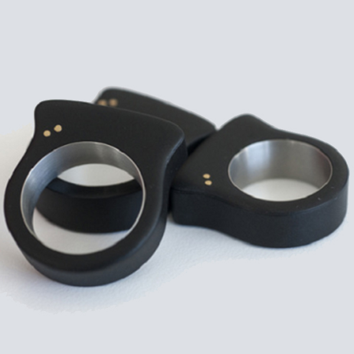
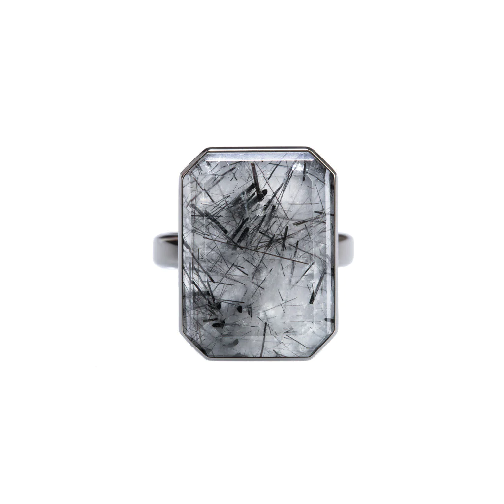

Historia de los Smart Ring
La historia de los Smart ring se remonta al año 2010, época en la que hubo un periodo de gran avance tecnológico y un gran crecimiento más concretamente en los dispositivos wearables. Por ello algunas empresas aprovecharon esta oportunidad y crearon un dispositivo más íntimo, más discreto y mucho más elegante que los wearables que ya existían en ese entonces. En ese momento nació la idea de los Smart Ring.
Todo esto fue posible gracias a que diferentes componentes se empezaron a miniaturizar, haciendo que se pudieran crear sensores más pequeños, baterías más pequeñas pero muy eficientes, chips más potentes. Este gran progreso tecnológico que se llevó a cabo, hizo que fuese posible el desarrollo de dispositivos que pudieran portarse de manera más discreta. Esto unido con el auge de la demanda de los wearables ya existentes hizo pensar a las empresas que la demanda iba más allá de los relojes inteligentes que había en esa época, haciendo que se buscara algo más sutil, algo que se integrase con un estilo de vida que no sacrificara funcionalidades.
Fue en ese mismo momento, cuando después de mucho tiempo de investigación y de desarrollo, se empezaron a presentar los primeros Smart Ring al mundo. Estos, contaban con un diseño elegante y pensados con el fin de que fuese cómodo portarlo durante todo el día, así como de ofrecer una gran cantidad de posibilidades tecnológicas, ya que este, ofrecía notificaciones discretas, seguimiento de actividades físicas y funciones de control de dispositivos, capaces todas estas de encontrarse en un dispositivo pequeño que se adapta perfectamente al dedo.
Desde ese momento la aceptación del Smart Ring fue instantánea, haciendo que la demanda poco a poco creciese, haciendo que otras empresas empezasen a ser competidoras de las pioneras cuando empezaron a crearse sus propios modelos de anillos. Destacar que en los años siguientes estos anillos fueron evolucionando en las características y componentes del producto.
Destacar que no hay una empresa que crease oficialmente este producto si no que existen algunas como por ejemplo Ringly, que sacó el producto al mercado en 2014 o también la empresa NFC Ring que pasó a llamarse McLear Smart Ring que sacó el producto en ese mismo año, estas son dos de las muchas que sacaron el producto en ese año y son las que se pueden considerar como pioneras en el negocio de los Smart Ring.
Descripción del producto
El anillo inteligente también llamado Smart Ring es un dispositivo con el cual podremos recibir diferentes notificaciones, llamadas en tiempo real, información sobre la actividad física, entre otras actividades, y todas estas funcionalidades se pueden llevar a cabo gracias a que está conectado a otro dispositivo, como puede ser un teléfono móvil. De esta manera recibe todas las notificaciones que el dispositivo en cuestión reciba y también mandará a este todos los datos relacionados con la actividad física que recopile. Cabe destacar que es un producto el cual nos facilitará muchísimo la vida en cosas cotidianas como puede ser el caso de que nos suene el móvil y no nos dé tiempo a cogerlo, pues con este dispositivo, podremos coger esa llamada sin necesidad de manipular el dispositivo móvil. Entre algunas de sus funciones podemos encontrar la de recibir alertas de correo, mensajes de texto, entre otras muchas como hemos mencionado anteriormente. Destacar que gracias a su bluetooth que es capaz de conectarse a cualquier dispositivo, hace que se vea como un ratón siendo capaz de que con un movimiento puedas abrir programas, puedas cambiar de canales en el caso de la televisión...
Cabe destacar que no todos los Smart ring tienen las mismas funcionalidades, ya que hay dispositivos enfocados más en recibir notificaciones, otros están más enfocados en la recopilación de los datos de actividades físicas, otros están enfocados en guardar los datos bancarios y así poder realizar trasferencias, al igual que puede haber alguno que mezcle algunas funcionalidades, de las ya mencionadas.
¿Por qué considerar que un Smart ring es un dispositivo hardware relacionado con la interacción?
Este dispositivo se considera un dispositivo hardware de interacción por su capacidad para ir más allá de su función estética y convertirse en una interfaz inteligente entre el usuario y la tecnología. Además, este producto está dotado de sensores avanzados, incorporando acelerómetros y giroscopios que le permiten captar los movimientos y gestos sutiles de quien lo lleva puesto, además de albergar tecnología táctil, siendo capaz esta de responder ante toques precisos, haciendo que cada toque se trasforme en una acción significativa.
La conectividad se convierte en su puente con el mundo digital, ya que se encuentra equipado con Bluetooth o NFC, el Smart ring establece comunicación con otros dispositivos, desde teléfonos inteligentes hasta tabletas, creando un ecosistema tecnológico personalizado. Este anillo, que aparentemente podría pasar desapercibido, se convierte en una herramienta de interacción versátil, ya que permite al usuario recibir notificaciones, sincronizar datos y controlar otros dispositivos de manera intuitiva sin necesidad de manipular al dispositivo que se conecta.
En conclusión, este anillo aparentemente simple se reconoce como un dispositivo hardware de interacción porque integra tecnología avanzada de manera elegante, en forma de anillo, y es que el Smart ring no solo adorna la mano, sino que se convierte en una interfaz inteligente que empodera al usuario, una gran cantidad de posibilidades para interactuar de manera intuitiva y sofisticada con el mundo digital que nos rodea. Y es que, con cada gesto, en cada toque que realice el usuario, el Smart ring revela su potencial para transformar la experiencia cotidiana en una interacción tecnológica única y personalizada.
Características del producto
Destacar que algunas de las características que podemos destacar del Smart Ring, que son muy parecidas entre sí son las siguientes:
- Notificaciones en tiempo real
- Seguimiento de actividades físicas
- Conectividad inalámbrica
- Control por gestos
- Pagos sin contacto
- Seguridad y autenticación
- Monitorización y recopilación de datos de salud
- Alertas de emergencia
- Resistencia al agua
- Batería de larga duración
- Compatibilidad con diferentes dispositivos móviles.
Cabe destacar que las características específicas pueden variar según el modelo de Smart Ring y la marca.
Ventajas y Desventajas de la compra del Smart Ring
| VENTAJAS | DESVENTAJAS |
|---|---|
| Destacar que una de las ventajas que tiene este producto puede ser su estilo y su discreción, ya que estos productos, son dispositivos de pequeño tamaño que se integran muy fácil en la vida cotidiana de aquellas personas que lo portan, pero sin llamar excesivamente la atención. Y destacar que muchos de estos anillos pueden ser personalizados por el cliente. | Una de las desventajas que pueden llegar a tener los Smart ring son algunas limitaciones, ya que debido al tamaño tan pequeño que tiene el producto, en comparación con otros, estos pueden llegar a tener algunas limitaciones en el aspecto funcional del producto. Algunas de las limitaciones más frecuentes pueden ser el hecho de carecer de una pantalla grande, así como de algunas características avanzadas. |
| Otra de las ventajas que tiene este producto es la portabilidad y comodidad para llevarlo en tu día a día, y es que, al ser pequeños, los Smart ring son cómodos de llevar durante todo el día, además de que el tamaño que tienen también les ayuda en su alta portabilidad. | Otra de las desventajas a tener en cuenta en el dispositivo, es su limitación de interfaz, y es que la interfaz de usuario en este producto, es más limitada debido al tamaño reducido de este, llegando a provocar que la interacción y navegación a través del dispositivo sea menos intuitiva. |
| Otra de las ventajas que distinguimos de este producto es el que algunos Smart ring son capaces de recibir notificaciones en tiempo real, y es que este producto suele ofrecer las notificaciones de forma directa en el anillo, haciendo que el usuario que lo porte, pueda estar al tanto de los mensajes, las llamadas o diferentes alertas que reciba a diario, sin la necesidad de manipular su teléfono móvil. | Otra de las desventajas del producto, es que la duración de la batería de este es limitada debido al tamaño reducido del producto, haciendo que este necesite recibir cargas de forma continuada en comparación de otros dispositivos de mayor tamaño. |
| Otra de las ventajas que tienen estos dispositivos, es la integración de funciones específicas, y es que, a pesar de su tamaño, los Smart ring ofrecen funcionalidades específicas, como puede ser, el seguimiento de actividades físicas, control del dispositivo al que se conecte, entre otras muchas más funciones. | Otra de las desventajas de este producto, es su precio, y es que el precio de los Smart Ring, pueden llegar a ser bastante altos en comparación con diferentes wearables que podamos encontrar en el mercado, los cuales puedan llegar a tener funcionalidades similares a este, influyendo en las decisiones de compra de los clientes. |
| Por último, decir que otra de las ventajas que tiene este dispositivo es la fácil integración al estilo de vida del usuario que lo porte. Pues bien, cabe destacar que el dispositivo está diseñado para integrarse con el estilo de vida de la persona que lo porte, ofreciéndole diferentes funcionalidades que se adapten a las necesidades o preferencias que este tenga. | Por último, destacar que otra de las desventajas que tiene este dispositivo, es su compatibilidad con otros dispositivos. Esto se debe a que su compatibilidad con otros dispositivos, puede llegar a ser limitada en determinados casos, haciendo que sea necesario saber si el Smart ring que compras es compatible con los dispositivos al que lo quieres vincular. |
Principales funcionalidades de todos los Smart Ring
Los Smart Rings, o también llamados anillos inteligentes, son dispositivos wearables que han ganado popularidad por su combinación de estilo y tecnología avanzada. Estos pequeños dispositivos se han convertido en más que simples accesorios, ya que ofrecen una amplia gama de funciones que van más allá de lo que es la joyería tradicional. A continuación, vamos a presentar algunas de las principales funcionalidades que tienen estos dispositivos y que hacen que destaquen en el mundo de la tecnología. Agúnas de las funcionalidades son las siguientes:
- Pago sin contacto
- Seguimiento de la actividad física
- Notificaciones y alertas
- Control remoto
- Seguridad y autenticación
- Conectividad con los asistentes virtuales
- Personalización y estilo
1. Pago sin contacto
Uno de los puntos destacados de muchos Smart Rings es su capacidad para realizar pagos sin contacto, y es que estos están equipados con tecnología NFC o (Near Field Communication), esta función que tienen algunos anillos es la de permitir a todo el que lo lleve puesto realizar pagos de forma rápida y segura, simplemente acercándolo a un terminal de pago que sea compatible con estos dispositivos. Y es que esta función del Smart Ring aporta comodidad a todo aquel que lo porte ya que no es necesario que saques la tarjeta de crédito o un teléfono para poder realizar el pago.
2. Seguimiento de la actividad física
Destacar que muchos anillos inteligentes, tienen como función principal la de monitorizar la actividad física que realizas a lo largo de todo el día. Esto lo llevan a cabo gracias a unos sensores que incorporan, los cuales se encargan de monitorizar los pasos que das a lo largo del día, la distancia que recorres, las calorías que quemas durante el ejercicio físico, y en algunos casos también miden la calidad de tu sueño. Esto ayuda a que las personas que porten el dispositivo, tengan una visión completa de la actividad física que realizan a lo largo del día, así como ayuda a que estos puedan tener un estilo de vida más saludable.
3. Notificaciones y alertas
Destacar que otra de las funciones que tienen los Smart Ring, es la de actuar como una extensión discreta de los teléfonos móviles a los que este se conecta, ya que las notificaciones que le lleguen a su móvil, las recibirá directamente en el dedo donde tenga colocado el anillo. Estas alertas pueden ser tanto de llamadas, mensajes de texto, notificaciones procedentes de las redes sociales... Este anillo trasmite la llegada de cualquier notificación, a través de vibraciones o emitiendo alguna señal visual, con el fin de mantener a los usuarios informados en todo momento de la llegada de cualquier tipo de notificación.
4. Control remoto
Destacar que otra de las funcionalidades que tienen algunos de estos dispositivos, es la de tener la capacidad de controlar otros dispositivos electrónicos de forma remota. Esto quiere decir que el anillo en cuestión, puede usarse como un una especie de controlador, ya sea como un ratón o como un mando, ya que puede controlar las playlist, bajar y subir de volumen, así como funciones de cambio de diapositivas en presentaciones, controlar dispositivos electrodomésticos, entre otras muchas más funciones.
5. Seguridad y autenticación
Destacar que otra característica del Smart Ring es la autenticación biométrica, y es que, a partir de los sensores como lectores de huellas dactilares o mediciones del ritmo cardíaco, estos dispositivos, dan una seguridad adicional, al poder desbloquear otros dispositivos o acceder a diferentes aplicaciones solo cuando el usuario lo autorice.
6. Conectividad con los asistentes virtuales
Y es que tenemos que saber que este dispositivo también ofrece una característica muy innovadora como es la de la integrarse con los asistentes como puede ser Siri, Alexa, entre otros. Esto hace que los usuarios que portan el anillo, sean capaces de realizar tareas de forma mucho más cómoda, al usar diferentes comandos de voz, y de esta manera, se amplía la funcionalidad del anillo más allá de las simples interacciones táctiles.
7. Personalización y estilo
Por otro lado, además de tener todas las funcionalidades tecnológicas que tiene el dispositivo, los Smart Ring, también suelen ofrecer opciones de personalización en cuanto al diseño y los materiales con los que se encuentra fabricado. Esto ayuda a los usuarios que quieran adquirir el producto, lo hagan en función de su estilo y sus preferencias estéticas.
Modelos del Smart Ring
Información relevante
Destacar que el Smart Ring o anillo inteligente es un dispositivo el cual lleva unos cuantos años ya en el mercado, pero no termina de ser del todo tan reconocido, debido a que marcas de dispositivos como apple, samsung, entre otras muchas aún no lo han sacado a la venta y es que a lo largo del 2024 sacarán sus productos y en ese momento, podemos destacar que este producto tendrá mucha más visibilidad que la que tiene a día de hoy. También destacar que los prototipos de algunas de las marcas satélites que van a sacar al mercado en el próximo año 2024 son las siguientes:


En conclusión, decir que cuando salgan a mercado estos modelos de anillo inteligente de las marcas de dispositivos tecnológicos como es el caso de apple, harán que este producto sea más conocido aún de lo que es ya y hará que el volumen de ventas de este pueda llegar a aumentar aún más debido al bum que puede generar la salida de estos prototipos al mercado.
Una vez explicado todo esto, vamos a pasar a mostrar los diferentes tipos de Smart Ring que a día de hoy podemos encontrar en el mercado y disponibles para comprar.
1. Oura Ring
En primer lugar, este anillo, es un producto creado por la empresa Oura, y es un dispositivo de seguimiento de la salud y el rendimiento. Este dispositivo está diseñado para monitorizar y por lo tanto recopilar datos relacionados con el sueño, actividad física... Destacar que el enfoque general de este producto es proporcionar información precisa y personalizada a los usuarios, con el fin de optimizar su salud y rendimiento. Es muy popular este producto entre usuarios que se dedican al mundo del deporte. Agunas de sus funcionalidades son las siguientes:
2. Motiv Ring
Este dispositivo en forma de anillo ha sido creado por la empresa Motiv y el cual tiene una serie de funciones a la hora de controlar tus parámetros de salud. Para comenzar hay que saber que este dispositivo en un principio, solo funcionaba con iOS, pero muchas personas de Android también querían aprovechar sus beneficios, haciendo que finalmente también fueran compatibles con este sistema operativo.
Las funciones de este dispositivo, no es únicamente la de contar solo tus pasos, si no que va más allá y mide los minutos activos de una persona, las distancias que corres y las calorías que consumes, y es que hay que destacar que este producto es como si fuese tu propio entrenador personal que se localiza en tu dedo. También se encarga de registrar cada ejercicio que realices, dando detalles sobre cuánto tiempo dedicaste, la energía consumida...
También, es de interés destacar que cuenta con sensores que miden tu ritmo cardíaco, y esto no te ayuda únicamente a saber cómo trabajas únicamente en los ejercicios, sino que también te da información sobre tu salud cardio bascular general.
Cabe destacar que, aunque las principales funciones del producto son las de obtener información sobre tu actividad física y salud, también cuenta con otras funciones como es el caso de poder conectarse a Alexa, haciendo que puedas darle órdenes y obtener respuesta directamente desde tu anillo. Destacar también, que no hay que preocuparse por la seguridad de este, ya que este anillo, no solo te ayuda a iniciar sesión en tus cuentas con un simple gesto, sino que también utiliza tus datos biométricos para asegurarse de que realmente eres tú quien lo está usando.
En conclusión, decir que el Motiv Ring ha pasado de ser un solo contador de pasos a convertirse en un compañero de salud y bienestar. Además, este producto no es solo pura elegancia, sino que también es inteligente y se adapta a tus propias necesidades, ya seas usuario de Iphone o Android.
3. Neyya Smart Ring
Este producto, ha sido creado por la empresa Neyya es un anillo inteligente, presentándose como una alternativa innovadora a los mandos a distancia tradicionales. Este producto ha sido diseñado para funcionar vinculándose a diferentes productos como es el caso de ordenadores, GoPro, Roku o teléfonos móviles, a través de bluetooth, ofreciendo una forma nueva de interactuar con tus diferentes dispositivos, mediante el uso de gestos táctiles.
Destacar que este producto tiene una serie de características muy innovadoras, como puede ser el caso de funcionar como si fuese un mando a distancia, y es que, gracias a poder vincularse a los diferentes dispositivos mediante bluetooth, es capaz de controlarlos sin la necesidad de utilizar un ratón o control remoto, y es que en lugar de clics o pulsar botones, lo que se utilizan son gestos. Y es que estos gestos se utilizan para una gran variedad de funciones, como puede ser el ejemplo de que si tu deslizas el dedo hacia el lado derecho, o hacia el LED, lo que hace es avanzar a la siguiente canción de música, mientras que, si lo haces hacia el lado contrario, lo que hace es retroceder a la canción anterior. Además, estos gestos, también pueden ser utilizados para ajustar el volumen, aceptar o rechazar llamadas, y controlar la captura de fotos y videos en una GoPro.
Además de tener las funcionalidades anteriormente descritas, podemos ver que este dispositivo, también actúa como un dispositivo de notificación, ya que cuando recibes mensajes, llamadas o en generar cualquier notificación, el dispositivo emite diferentes vibraciones para informarte de que te han llegado diferentes notificaciones.
Por último, destacar que este dispositivo es compatible con varios dispositivos, incluyendo ordenadores con Mac OS 10.8 o posterior, ordenadores con Windows 8.1, GoPro y diferentes teléfonos móviles. Para llevar a cabo esta conexión con los diferentes teléfonos móviles lo que utiliza es el Bluetooth 4.0, el cual tiene un alcance de hasta 6 metros. Y destacar que para utilizar este anillo hay que descargarse la aplicación Neyya, el cual está disponible para iOS 8 o versiones posteriores. Para el caso de Android, hay que mencionar que estos quedan excluidos de esta experiencia. Gracias a esta aplicación, el anillo se vincula de forma más sencilla.
4. McLear Smart Ring
Este dispositivo, fue creado por la empresa McLear, y es un anillo enfocado en facilitar los pagos sin contacto a través de la tecnología NFC o Near Field Communication. Y es que este producto esta creado para permitir que los usuarios puedan realizar transacciones de forma segura simplemente tocando un terminal de pago. Al vincular este dispositivo con las tarjetas bancarias o servicios de pago móvil, los usuarios pueden llevar a cabo pagos de manera rápida sin la necesidad de sacar una tarjeta física o un dispositivo móvil.
Cabe destacar que este anillo, como se ha mencionado anteriormente su función es la de pagos sin contacto, ya que este está equipado con tecnología NFC, haciendo que los usuarios realicen pagos de forma segura, tocando un terminal de pago. Para ello, el anillo es capaz de vincularse a tarjetas bancarias o servicios de pago móvil. Esto junto a un sistema de seguridad ampliamente desarrollado, el cual implementa medidas para proteger toda la información financiera hace que el dispositivo sea una manera de pago sencilla y segura.
Destacar que la compatibilidad del dispositivo se lleva a cabo a través de la conectividad NFC y esta no solo se limita a las transacciones financieras, sino que también permitía la interacción con otros dispositivos compatibles con NFC, haciendo que el producto pueda vincularse también a teléfonos móviles u otros dispositivos electrónicos.
Por último, cabe destacar que para que el dispositivo pueda llevar a cabo el proceso de pago, este necesita llevar a cabo una recarga que se lleva a cabo a tarvés de un proceso de gestión que involucraba la recarga del saldo asociado al anillo para realizar pagos.
En conclusión, la función central de este producto es actuar como un medio de pago sin contacto, ofreciéndole a los usuarios una forma alternativa y tecnológicamente avanzada de realizar transacciones financieras en establecimientos que admitan esta modalidad de pago.
5. Mota Smart Ring

En cuanto a este Smart Ring, destacar que fue creado por la empresa Mota, y cabe destacar que es un anillo inteligente con el que se busca recibir las notificaciones desde nuestros teléfonos móviles a nuestro dedo que es el lugar donde se lleva este dispositivo, haciendo que estemos en contacto con todas las novedades sin la necesidad de mirar el móvil.
Destacar que la principal función del anillo es la de servir exclusivamente para leer las notificaciones.
Este producto contará con una pantalla táctil que desplegará texto a un solo color y será compatible tanto con Android como con iOS a través de una aplicación para la sincronización de las alertas.
Entre las diferentes alertas o mensajes que podremos observar a través de este dispositivo encontraremos, los mensajes de texto, notificaciones de llamada, correos electrónicos, las notificaciones de Facebook, Twitter e Instagram, así como cualquier evento que tengamos previsto en nuestro calendario, los cuales recibiremos como una serie de pequeñas vibraciones, teniendo en cuenta que estas se podrán personalizar teniendo en cuenta nuestras necesidades.
6. Kerv Ring
Este dispositivo, fue creado por la empresa Kerv, y el cual, es un anillo inteligente culla función principal es la de pago a distancia, al incluir esta tecnología NFC. Cabe destacar que, aunque nosotros podamos imaginarnos que tiene las mismas funciones que otros productos del mercado, cabe destacar que no que este producto va más lejos, ya que este dispositivo es autónomo y no depende de otros dispositivos. En otras palabras, este producto no necesita estar conectado a teléfono móvil para validar la operación.
En cuanto al funcionamiento del producto, destacar que gracias a la magia de la NFC que usa el dispositivo, y la cual es una tecnología de comunicación inalámbrica, de corto alcance y alta frecuencia, cuyo fin es permitir el intercambio de datos entre dispositivos. Destacar que este dispositivo hace uso de la red de pago de MasterCard, por lo que antes de usarlo debemos de hacernos una cuenta Virtual Prepaid MasterCard que se utilizará para cargar digitalmente con la cantidad que queremos gastar, por lo que no hay peligro si nos robasen el código.
Por último, destacar que la ventaja de Kerv ring frente a cualquier competencia de este, es su capacidad autónoma, ya que este funciona de manera independiente, en cambio otros dispositivos necesitan estar conectados mediante Bluetooth a un terminal.
7. Nod-Ring
Este dispositivo, es un anillo inteligente creado por la empresa Nod-Ring y el cual lo definen como el controlador de los demás dispositivos inteligentes, llevándolo a cabo a través de movimientos de la mano al más puro estilo Leap Motion.
Como estábamos diciendo anteriormente, este dispositivo permite al usuario controlar con gestos diferentes dispositivos como es el caso de teléfonos móviles, táblets, las televisiones con Smart TV, ordenadores o incluso algunos electrodomésticos inteligentes como puede ser el caso de las bombillas inteligentes. El mencionado control de estos electrodomésticos, se llevan a cabo a través de gestos de la mano, aunque este anillo, también cuenta con una pequeña superficie táctil y con dos botones para complementar esta forma de interacción.
Viendo la cantidad de limitaciones de la conectividad Bluetooth, los creadores del Nod han implementado la posibilidad de que el anillo interactúe con los dispositivos en función de la proximidad con éstos, es decir, que el Bluetooth se active o desactive automáticamente según los dispositivos conectados que tenga en su rango de acción.
Por último, cabe destacar que como el dispositivo hace uso de la conectividad vía Bluetooth, el consumo de este será mucho menor, haciendo que su autonomía sea de aproximadamente 24 horas aproximadamente.
8. Ringly Luxe Smart Ring
Este producto, es un dispositivo creado por la empresa Ringly, el cual funciona a través de bluetooth, a través del cual aparte de lucir de forma glamurosa, tiene funciones tecnológicas como es el caso de controlar la música que escuches, al deslizar los dedos sobre la gema de cristal que tiene el anillo, y además, podrás llevar a cabo otras funciones como las de avanzar, pausar, regresar a tu playlist. También tiene otras funciones como la de contestar tus llamadas, así como otras funciones relacionadas con las notificaciones que nos llegan a diario al dispositivo al que se conecte. En conclusión, este anillo ayuda a que la vida tecnológica de la persona que lo porte sea mucho más fácil.
Precio de los diferentes modelos de Smart Ring
| Nombre de los diferentes tipos de Smart Ring | |||||||||||||||||||||||||
|---|---|---|---|---|---|---|---|---|---|---|---|---|---|---|---|---|---|---|---|---|---|---|---|---|---|
| Oura Ring | Motiv Ring | Neyya Smart Ring | McLear Smart Ring | ||||||||||||||||||||||
| Nombre del modelo | Oura Ring Heritage | Oura Ring Horizon | Motiv Ring | Neyya Smart Ring | RingPay | RingPay 2 | |||||||||||||||||||
| Colores | Plata | Negro | Gris | Oro | Plata | Negro | Gris | Titanio | Oro | Oro rosa | Plata | Negro | Oro rosa | Titanio | Gold | Negro | Blanco | Negro | Blanco | Plata | Gris | ||||
| Precio | 329€ | 329€ | 449€ | 499€ | 399€ | 399€ | 499€ | 499€ | 549€ | 599€ | 199.99€ | 129€ | 159€ | 89.99€ | 99.99€ | 119.99€ | |||||||||
| Nombre de los diferentes tipos de Smart Ring | |||||||||||||||||||||||||
|---|---|---|---|---|---|---|---|---|---|---|---|---|---|---|---|---|---|---|---|---|---|---|---|---|---|
| Mota Smart Ring | Kerv Ring | Nod-Ring | Ringly | ||||||||||||||||||||||
| Nombre del modelo | Mota Smart Ring | Kerv Ring | Nod Ring | Ringly Luxe Smart Ring | |||||||||||||||||||||
| Colores | Negro media noche | Blanco perla | 14 combinaciones diferentes de colores | Negro | Negro | Morado | Blanco | Verde | |||||||||||||||||
| Precio | 80€ | 120€ | 149€ | 165€ | |||||||||||||||||||||